Petit groupe · 19 jours · 2027
Vietnam en profondeur : du Grand Nord au Mékong
Hanoï · Hà Giang · Cao Bằng · Ba Bể · Ninh Bình · Lan Hạ · Huế · Hội An · Saigon · Bến Tre
Le voyage
19 jours, du Grand Nord au Mékong.
Un voyage en petit groupe, des montagnes du Nord jusqu’au delta du Mékong. Un guide local francophone vous accompagne tout au long du circuit.
- 01Petit groupe, 7 voyageurs maximum
- 02Guide local francophone, du premier au dernier jour
- 03Le Grand Nord : Hà Giang, Cao Bằng, Ba Bể
- 04Une nuit à bord, dans la baie de Lan Hạ / Bái Tử Long
- 05Le delta du Mékong, à Bến Tre
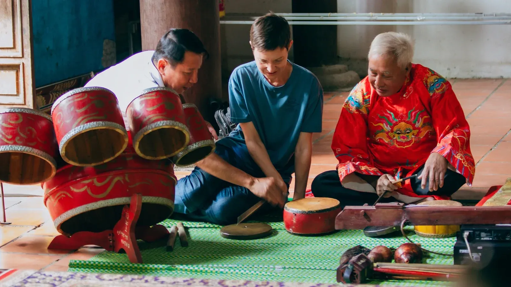
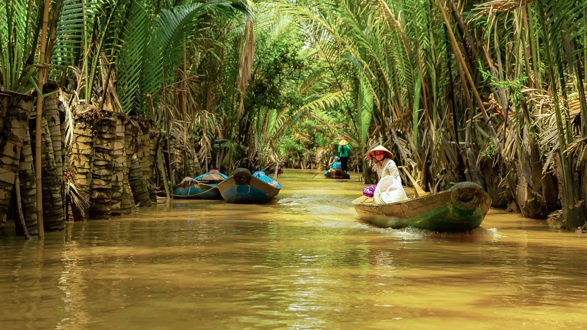
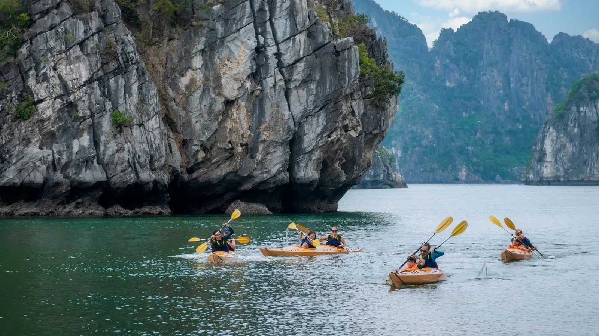
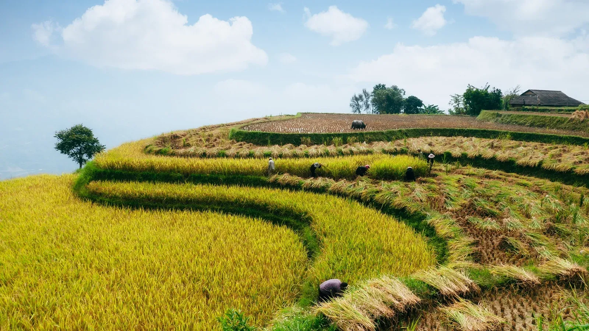
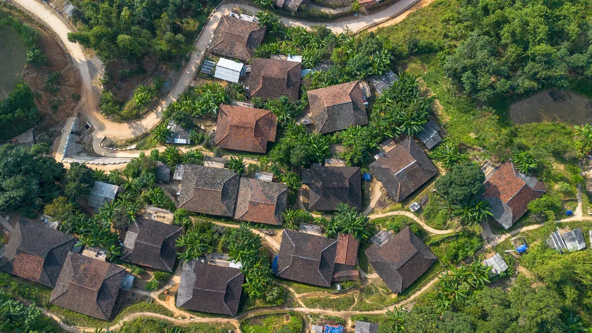
17 photos Une femme en costume traditionnel au marché, à Hà GiangLa cascade de Bản Giốc, à Cao BằngPetite île et barques sur le lac de Ba BểGrotte éclairée dans la région de Ba BểLe Temple de la Littérature, à HanoïBarque sur la rivière, à Tam Cốc (Ninh Bình)Îles calcaires de la baie de Bái Tử LongLa Cité impériale de HuếIntérieur du tombeau de Khải Định, à HuếMaison ancienne et bougainvilliers dans la vieille ville de Hội AnPortail coloré d’une salle d’assemblée, à Hội AnL’Hôtel de Ville de SaigonItinéraire
Jour après jour
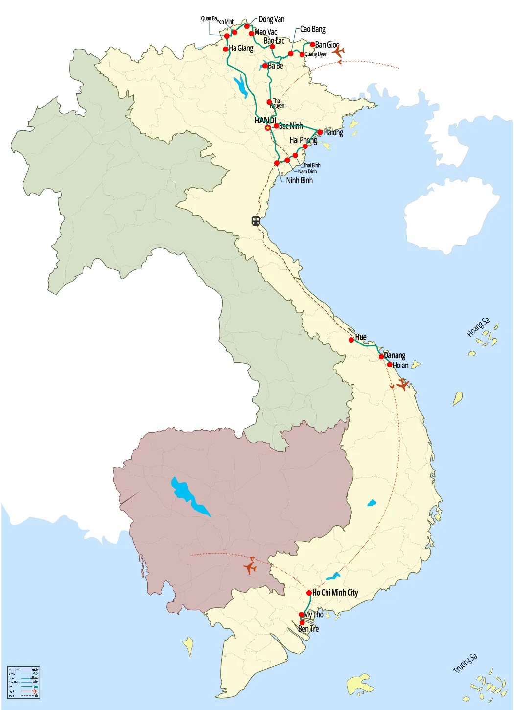
Agrandir la carte- ArrivéeHanoï
-
Jour01 Hanoï Arrivée à Hanoï, accueil à l'aéroport et transfert à l'hôtel
À votre arrivée à l’aéroport de Noi Bai, vous serez accueilli par notre chauffeur qui vous attendra à la sortie du hall des arrivées. Vous profiterez ensuite d’un trajet d’environ 45 minutes vers le cœur de Hanoi, en traversant le fleuve Rouge, avec un premier aperçu de l’architecture unique de la ville et de sa circulation animée si caractéristique.
Une fois arrivé dans le Vieux Quartier, le chauffeur vous déposera à votre hôtel.
Le reste de la journée est libre pour découvrir Hanoi à votre rythme. Vous pourrez profiter d’un massage relaxant au spa, faire du shopping pour acheter quelques souvenirs, ou encore participer à une aventure en Jeep à travers la ville.
Remarques : Veuillez noter que ces activités sont proposées à titre de suggestion uniquement et ne sont pas comprises dans le prix du circuit.
Les repas sont à votre charge (non inclus). Nuit à Hanoi.
Note : L’heure d’enregistrement à l’hôtel est à partir de 14h00. Un enregistrement anticipé est possible sous réserve de disponibilité et peut entraîner des frais supplémentaires. Chambre ROH (Run of House) signifie que la catégorie de chambre sera attribuée selon les disponibilités de l’hôtel au moment de l’arrivée.
Hébergement Conifer Boutique Hotel — chambre ROH · ou similaire
- Le Grand NordHà Giang · Cao Bằng · Ba Bể
-
Jour02 Hanoï → Hà Giang Trajet vers Hà Giang et courte promenade à travers les paisibles villages Tày.
8:00 Quittez votre hôtel à Hanoï et dirigez-vous vers Ha Giang, en empruntant l'autoroute à travers Phu Tho. En cours de route, prenez le temps de visiter un village Dao à Ham Yen, Tuyen Quang. Ici, vous aurez l'occasion d'explorer les maisons sur pilotis, un style architectural distinctif des groupes ethniques de cette région montagneuse.
Déjeuner dans un restaurant local en cours de route.
À notre arrivée à Ha Giang, nous nous installerons chez l’habitant, puis profitez d’une agréable promenade à travers les rizières et les paisibles villages Tay, le long de petits chemins en béton nichés au pied de montagnes verdoyantes. En chemin, admirez les magnifiques paysages ruraux ponctués de forêts de palmiers, de maisons sur pilotis traditionnelles et de vastes vues sur la vallée.
Découvrez la vie quotidienne et la culture de la communauté ethnique Tay en traversant les villages de Ha Thanh, Tan Tien et Cuong Thinh. Il sera également possible de visiter des maisons locales et d’échanger avec les habitants accueillants, offrant un aperçu authentique de la vie dans les hautes terres.
Distance à pied : environ 4-6 km
Dînez chez l’habitant et passez la nuit à Ha Giang.
Hébergement Nghiem’s Homestay, Thôn Tha — bungalow double · ou similaire
-
Jour03 Hà Giang → Đồng Văn Découvrez le géoparc de Hà Giang, les montagnes jumelles, le palais du roi H’mong et les cultures ethniques vivantes.
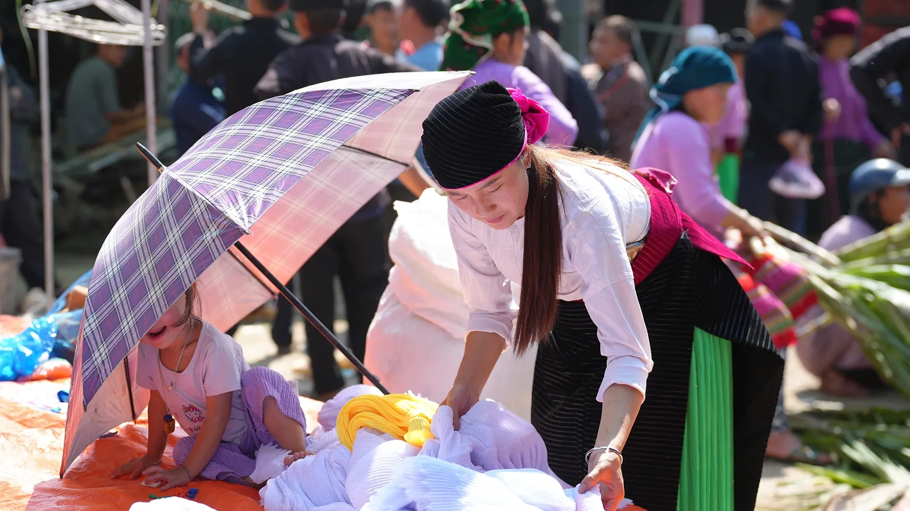
8:30 Partez en direction de Dong Van à travers les paysages enchanteurs du nord du Vietnam, où défilent de superbes panoramas tout au long du trajet.
Avant d’atteindre le col de Quan Ba, faites une halte pour visiter un village de l’ethnie Bo Y dans la commune de Quyet Tien. Originaires de Chine, les Bo Y forment une petite communauté d’environ 2 000 personnes vivant dans les régions montagneuses reculées du nord du pays.
Arrêtez-vous ensuite au point de vue de Quan Ba pour une courte pause et admirez la vue panoramique sur la ville de Quan Ba et les célèbres montagnes jumelles des Fées.
Poursuivez la route vers le plateau calcaire, souvent appelé la « baie d’Halong des montagnes ». Cette région karstique spectaculaire est classée Géoparc mondial pour son importance géologique et culturelle. En chemin, arrêtez-vous à la coopérative de tissage de Lung Tam, un projet communautaire porté par des femmes Hmong. Vous y découvrirez les techniques traditionnelles de tissage du chanvre et de teinture à l’indigo – un savoir-faire ancestral transmis de génération en génération.
Après le déjeuner dans un restaurant local, profitez d’une courte promenade jusqu’au village de Lung Hoa, où vous découvrirez les maisons traditionnelles en terre battue construites par les Hmong. Ces habitations sont réputées pour leur solidité et leur parfaite intégration dans l’environnement.
Poursuivez avec la visite du palais du roi Hmong. Construit il y a plus d’un siècle, ce palais historique témoigne d’une époque où les régions de Quan Ba, Yen Minh, Dong Van et Meo Vạc formaient une zone autonome dirigée par les Hmong. À cette époque, la culture du pavot était largement répandue et l’économie locale prospérait grâce au commerce de l’opium avec la Chine.
Arrivée à Dong Van, installation à votre hébergement et temps libre pour vous détendre.
Dîner dans un restaurant local et nuit à Dong Van.
Hébergement Hoa Cuong Hotel — chambre double · ou similaire
-
Jour04 Đồng Văn → Mèo Vạc → Bảo Lạc Traversez le col de Ma Pi Leng, promenez-vous sur le sentier du ciel et visitez un village Lolo Noir.
8:30 Partez de Dong Van en direction de Bao Lac, avec un arrêt en chemin au Musée de la Route du Bonheur. Ce petit musée émouvant rend hommage aux dizaines de milliers de jeunes volontaires qui ont taillé la “Route du Bonheur” à travers les montagnes dans les années 1950 – un symbole d’unité et de résilience dans le Vietnam d’après-guerre.
De là, partez pour une agréable promenade sur le Skypath, qui commence par une montée douce jusqu'à la Falaise de Dieu, offrant une vue panoramique sur la rivière Nho Que et les pics karstiques environnants. Descendez ensuite dans une vallée paisible, en croisant des agriculteurs Hmong et en découvrant leur méthode unique de culture en niches de pierre. La balade se termine près d’un jardin d’enfants local, où vous retrouverez votre véhicule pour poursuivre vers Bao Lac.
Déjeuner dans un restaurant local.
L'après-midi est consacré à la découverte du riche patrimoine culturel du Peuple Lolo Noir, avec la visite du village de Khuoi Khon ou de Coc Xa. Les deux destinations sont nichées en haute montagne, offrant une échappée paisible et bien préservée de l'agitation de la vie citadine moderne. Le Village de Khuoi Khon permet de découvrir la communauté qui a autrefois accueilli le joueur de rugby français Frédéric Michalak lors du tournage du documentaire télévisé « Rendez-vous en terre inconnue ». De son côté, le Village de Coc Xa offre un cadre tout aussi merveilleux pour observer le caractère séculaire et le mode de vie traditionnel de cette communauté montagnarde. Selon l'itinéraire et le timing, la visite de l'un ou l'autre village garantit une immersion authentique dans l'architecture unique et les coutumes durables de la communauté Lolo Noir.
Une fois sur place, flânez dans les ruelles, visitez une maison traditionnelle Lo Lo et échangez avec votre hôte pour mieux comprendre leur mode de vie et leur culture.
Retour ensuite à Bao Lac et installation dans un hôtel local.
Dîner dans un restaurant local et nuit à Bao Lac.
Hébergement PaoLo Hotel — chambre double · ou similaire
-
Jour05 Bảo Lạc → Quảng Uyên → Bản Giốc Voyage vers Ban Gioc via un col de montagne à 15 niveaux.
8:30 Nous partons pour Ban Gioc, en suivant une route panoramique via le col de Khau Coc Cha. Bien que long de seulement 2,5 kilomètres, ce col de montagne escarpé comprend 15 niveaux et 14 virages serrés, offrant un trajet inoubliable à travers des paysages spectaculaires et sauvages.
En descendant du col, nous arrivons dans la paisible vallée de Xuan Truong, une magnifique région composée de vastes rizières et de maisons traditionnelles sur pilotis. Vous aurez l’occasion de visiter une famille locale — une expérience authentique qui permet de découvrir la vie quotidienne et les traditions culturelles de cette région reculée.
Le voyage se poursuit par le col de Na Tenh, où se dévoilent des panoramas de montagnes verdoyantes et de vallées paisibles.
Déjeuner dans un restaurant local.
À votre arrivée à Ban Gioc, installation dans un hôtel local et temps libre pour le reste de la journée.
Dîner et nuit à Ban Gioc.
Hébergement Saigon – Ban Gioc Resort — chambre deluxe · ou similaire
-
Jour06 Bản Giốc → Quảng Uyên → Cao Bằng Découvrez la grotte de Nguom Ngao et la cascade de Ban Gioc, visitez le village de forgerons de Phuc Sen et le village d’encens de Phia Thap, puis partez pour la ville de Cao Bang.
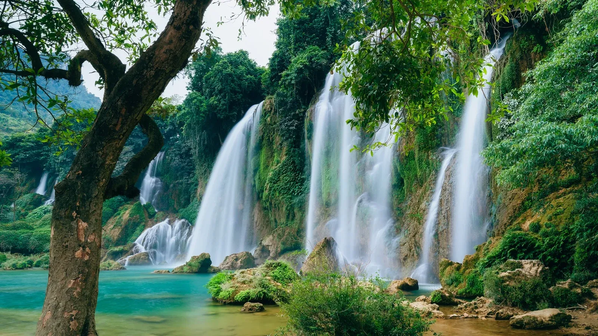
8:30 Nous commençons la journée par un court transfert vers la grotte de Nguom Ngao, paisiblement située dans la vallée du Maize. S’étendant sur plus de deux kilomètres, cette grotte remarquable est ornée de stalactites et stalagmites scintillantes, façonnées au fil de millions d’années. Au-delà de sa beauté naturelle, elle possède également une importance historique, ayant abrité des milliers de villageois durant le conflit frontalier entre le Vietnam et la Chine en 1979.
Nous poursuivons ensuite vers la cascade de Ban Gioc, une merveille naturelle située à la frontière entre le Vietnam et la Chine. Haute de 30 mètres et large de 208 mètres, elle est largement considérée comme l’une des plus belles chutes d’eau du pays.
Déjeuner dans un restaurant local.
Après le déjeuner, départ pour Cao Bang. Sur le chemin du retour, arrêt au village de Phuc Sen, réputé pour sa tradition séculaire de forge. Les artisans locaux y fabriquent encore à la main couteaux, outils agricoles et objets du quotidien, selon des techniques transmises de génération en génération. La visite d’un atelier familial permet de découvrir ce savoir-faire vivant et son rôle essentiel dans la vie rurale.
Plus tard dans l’après-midi, nous visitons le village d’encens de Phia Thap, une paisible communauté de l’ethnie Nung réputée pour son savoir-faire traditionnel dans la fabrication d’encens. Élaboré à partir d’ingrédients naturels issus de la forêt, cet encens reflète des générations de connaissances et d’artisanat local. Vous découvrirez les différentes étapes de cette production minutieuse, depuis la sélection et la préparation des matières premières jusqu’au roulage manuel de chaque bâtonnet d’encens.
À l’arrivée à Cao Bang, installation à l’hôtel pour la nuit.
Dîner et nuit à Cao Bang.
Hébergement Max Boutique Hotel — chambre deluxe · ou similaire
-
Jour07 Cao Bằng → Ba Bể Voyage vers Ba Be et profitez d’une balade en bateau relaxante sur le lac de Ba Be.
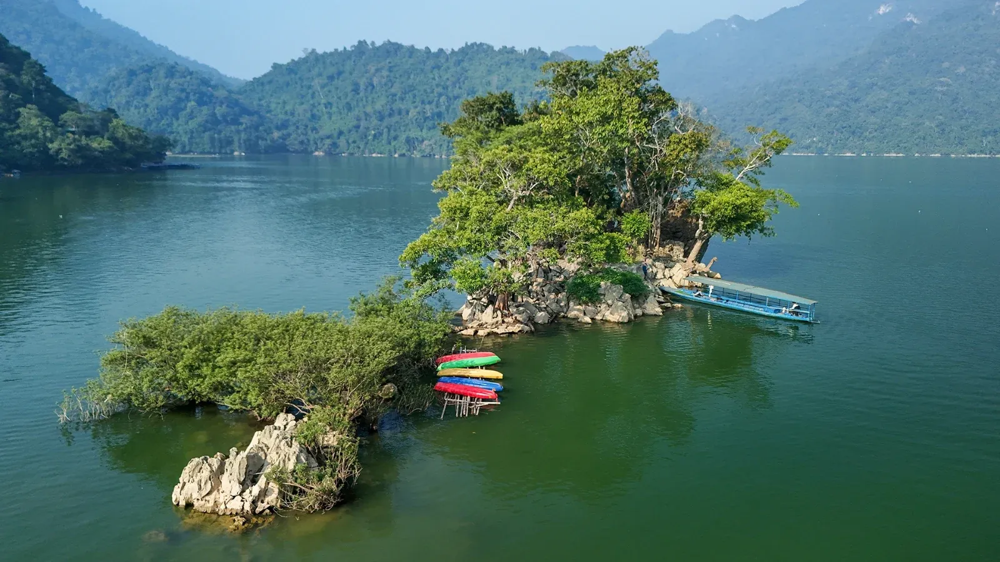
8:30 Nous prendrons la route vers les lacs de Ba Be, une destination magnifique nichée au cœur du parc national de Ba Be. Considéré comme l’un des plus grands lacs naturels d’eau douce du Vietnam, Ba Be est réputé pour ses paysages spectaculaires, sa riche biodiversité et son attrait croissant pour l’écotourisme. Le trajet dure environ quatre heures et offre de belles vues sur la campagne et la vie rurale.
Profitez d’un déjeuner dans un restaurant local.
À l’arrivée, nous embarquons pour une croisière panoramique depuis l’embarcadère de Cao Thuong. En descendant la rivière Nang, nous traversons la grotte de Puong, un impressionnant tunnel de calcaire sculpté par la rivière et abritant des milliers de chauves-souris. Nous débarquons brièvement pour explorer la grotte à pied avant de poursuivre notre navigation.
La croisière nous conduit ensuite aux chutes de Dau Dang, une série spectaculaire de cascades où la rivière Nang se faufile entre d’imposantes falaises calcaires. Nous profitons d’une promenade tranquille pour découvrir ce site puissant et atmosphérique, entouré de forêt dense et de formations rocheuses saisissantes.
Le bateau glisse ensuite sur les eaux paisibles des lacs de Ba Be, le plus grand ensemble naturel de lacs d’eau douce du Vietnam et le cœur du parc national de Ba Be. Composé de trois lacs interconnectés — Pe Leng, Pe Lu et Pe Lam — le site est réputé pour ses eaux émeraude, ses montagnes karstiques et sa riche biodiversité.
Au fil de la traversée, nous passons devant le célèbre îlot de la Veuve (îlot An Ma), un petit piton calcaire empreint de légendes locales. Nous débarquons ensuite et effectuons une courte marche jusqu’à notre maison d’hôtes dans le village de Pac Ngoi, où la communauté ethnique Tay vit au bord du lac, offrant un accueil chaleureux et un cadre paisible pour la nuit.
Profitez du dîner et d’une nuit chez l’habitant à Ba Be.
Hébergement Duy Tho Homestay — chambre double · ou similaire
-
Jour08 Ba Bể → Hanoï Découvrez la grotte de Hua Ma à vélo ou en voiture, puis retour vers Hanoi.
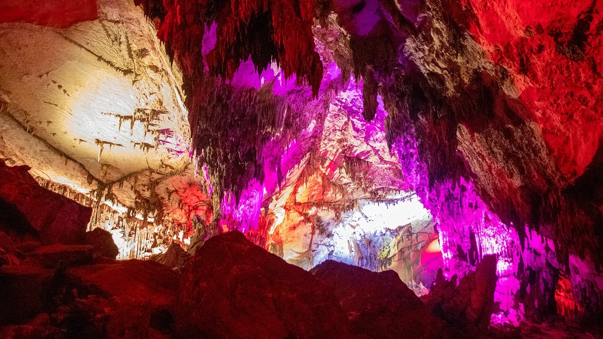
8:30 Après le petit-déjeuner, vous pouvez choisir de vous déplacer en voiture ou à vélo depuis votre maison d’hôtes à Pac Ngoi, en traversant de paisibles villages de l’ethnie Tay le long du lac et de la campagne environnante, pour rejoindre la grotte de Hua Ma, située à environ 5 km du village.
Nichée au cœur d’une montagne calcaire, la grotte de Hua Ma est réputée pour ses vastes galeries et ses remarquables formations de stalactites et stalagmites, mises en valeur par un éclairage soigné. Après la visite, retour à Pac Ngoi et à votre maison d’hôtes.
Transfert retour vers Hanoi. Le trajet dure environ cinq heures, avec dépose à votre hôtel dans le Vieux Quartier de Hanoi.
Profitez d’un déjeuner dans un restaurant local en cours de route. Le dîner est à votre charge (non inclus). Nuit à Hanoi.
Note : Si vous préférez ne pas faire de vélo, vous pouvez prendre une moto-taxi avec chauffeur à la place. Veuillez en informer votre guide à l’avance. Un supplément par personne et par moto s’applique.
Hébergement Conifer Boutique Hotel — chambre ROH · ou similaire
- Hanoï & Ninh BìnhCapitale et campagne du delta
-
Jour09 Hanoï Visitez le Temple de la Littérature, le Musée d’Ethnologie, la maison sur pilotis de Ho Chi Minh, explorez le vieux quartier animé et assistez à un spectacle de marionnettes sur l’eau.
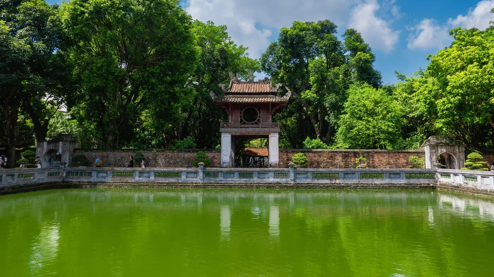
8:30 Commencez votre journée au Temple de la Littérature, fondé au XIᵉ siècle sous la dynastie Ly pour honorer Confucius et former les enfants royaux. Flânez dans ses cours et jardins paisibles jusqu’à Khue Van Cac, le pavillon emblématique qui symbolise Hanoi. Poursuivez vers les stèles de pierre, reconnues par l’UNESCO, qui portent les noms des diplômés les plus brillants du Vietnam, avant de découvrir Quoc Tu Giam, considéré comme la première université nationale du pays.
Continuez vers le Musée d’Ethnologie du Vietnam (fermé le lundi), une institution passionnante qui offre un aperçu profond des cultures des nombreuses ethnies vietnamiennes. Sa collection rassemble costumes traditionnels, outils agricoles, instruments de musique et maisons typiques reproduites à taille réelle. Une visite complète dure environ deux heures.
Pour le déjeuner, savourez l’un des plats les plus appréciés de Hanoi : le cha ca, du poisson grillé mariné au curcuma, servi avec herbes fraîches, vermicelles de riz et une sauce légèrement acidulée — un véritable incontournable de la gastronomie hanoïenne.
L’après-midi, poursuivez par une visite extérieure du Mausolée de Ho Chi Minh, puis baladez-vous dans le jardin botanique tout proche pour découvrir la simple Maison sur pilotis où Ho Chi Minh vécut et travailla. Terminez cette partie de la visite à la Pagode au Pilier Unique, l’un des symboles les plus singuliers de la ville.
Pour une pause gourmande, installez-vous sur un petit tabouret dans une maison-tube traditionnelle et dégustez un café aux œufs, une spécialité crémeuse née à l’époque coloniale française. Préparée avec du jaune d’œuf battu et du café vietnamien corsé, cette boisson iconique est très appréciée des habitants.
Terminez votre journée par une promenade dans le Vieux Quartier. Né au XVe siècle comme centre marchand animé, il compte les célèbres « 36 rues », chacune autrefois dédiée à un métier ou produit spécifique. Aujourd’hui, le quartier reste un véritable musée vivant, mêlant ruelles étroites, maisons-tubes, temples, marchés animés et une étonnante variété de street food.
En soirée, Ensuite, profitez d'un spectacle unique de marionnettes sur eau, un art traditionnel apparu au XIe siècle. À travers ces représentations, la vie quotidienne, la culture et les croyances du peuple vietnamien sont magnifiquement dépeintes par des marionnettes sur l'eau, le tout accompagné d'une performance de musique traditionnelle en direct.
Le dîner est à votre charge (non inclus). Nuit à Hanoi.
Hébergement Conifer Boutique Hotel — chambre ROH · ou similaire
-
Jour10 Hanoï → Ninh Bình Transfert vers Ninh Binh, promenade en barque de bambou à Tam Coc, visite du temple Thai Vi et des temples des rois Dinh et Le.
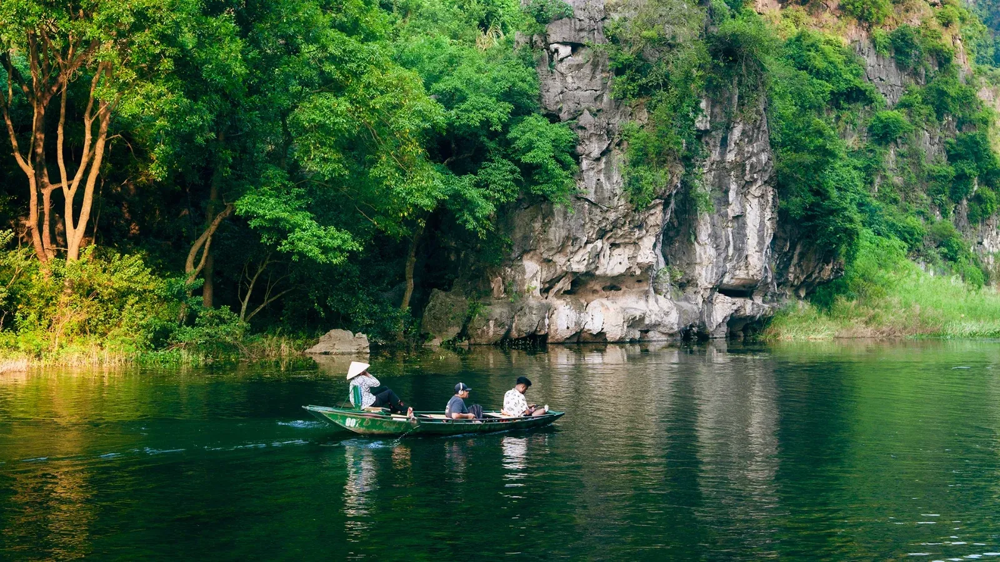
8:30 Rencontrez votre guide et votre chauffeur à l'hôtel pour le transfert à Ninh Binh. Un site fabuleux regorge de merveilles historique, culturelle, religieuse et géologique. En longeant le delta du fleuve Rouge, arrêtez-vous à votre guise pour prendre des photos.
À l’arrivée, nous faisons notre première halte à Tam Coc, souvent surnommé la « Baie d’Halong terrestre » pour ses spectaculaires formations karstiques s’élevant au milieu de rizières d’un vert éclatant. Ce paysage pittoresque a également servi de décor au célèbre film français Indochine. Profitez d’une balade privée en sampan sur la paisible rivière Ngo Dong, en traversant trois grottes naturelles et en admirant l’harmonie entre montagnes calcaires, rizières et vie rurale.
Après la promenade en bateau, nous visitons le temple Thai Vy, un sanctuaire paisible et peu fréquenté, niché entre rizières et montagnes calcaires. Dédié aux rois de la dynastie Tran, le temple rend hommage à l’empereur Tran Thai Tong et à ses successeurs, qui ont conduit le Vietnam durant son âge d’or au XIIIe siècle. Entièrement construit en pierre, il se distingue par son architecture sobre et élégante ainsi que par son atmosphère sereine, offrant une immersion profonde dans le patrimoine royal et spirituel vietnamien, loin des foules.
Déjeuner dans un restaurant local.
Après le déjeuner, nous partons pour Hoa Lu, l’ancienne capitale du Vietnam au Xe siècle. Nous visitons deux temples historiques dédiés à l’empereur Dinh Tien Hoang (règne 968–980) et à l’empereur Le Dai Hanh (règne 980–1009), fondateurs des premières dynasties vietnamiennes indépendantes après près de mille ans de domination chinoise. Bien que reconstruits au XVIIe siècle, ces temples demeurent un symbole fort du respect national et présentent une architecture vietnamienne traditionnelle dans un cadre spectaculaire de formations calcaires.
Plus tard dans la journée, nous retrouvons notre chauffeur et poursuivons la route vers la réserve naturelle de Van Long.
Dîner et nuit à Van Long.
Hébergement Nep House — chambre double · ou similaire
-
Jour11 Ninh Bình Explorez le temple de Thung La à vélo ou en scooter, assistez à un spectacle de musique traditionnelle, profitez d’une balade en bateau en bambou, découvrez l’église de Lang Van et participez à un atelier de broderie.
8:30 L’expérience à vélo commence alors que vous partez à vélo en direction du temple de Thung La. En suivant de paisibles chemins de campagne, vous traversez des rizières, des étangs de lotus et de nénuphars (selon la saison), ainsi que des villages traditionnels typiques du delta du fleuve Rouge. Selon la saison et l’heure de la journée, vous pourrez également apercevoir des agriculteurs travaillant dans les champs.
L’itinéraire traverse plusieurs villages caractéristiques du nord du Vietnam, notamment Trung Chinh, Bich Thuong et Loc Luong. À Trung Chinh, faites une halte pour découvrir le centre culturel du village, avec sa maison communale et sa pagode, et vous imprégner de la vie communautaire traditionnelle de la campagne vietnamienne.
La balade se poursuit ensuite jusqu’au temple de Thung La, qui constitue le point le plus éloigné de l’itinéraire. Vous y rencontrerez des artisans locaux et découvrirez plusieurs instruments de musique traditionnels vietnamiens. Vous pourrez les voir et les écouter, tout en découvrant davantage le patrimoine culturel local.
Après cette rencontre culturelle, reprenez le vélo le long de la digue qui borde la zone humide de Van Long, en profitant des paysages environnants sur le chemin du point de départ.
Ensuite, partez à la découverte de la réserve naturelle de Van Long à bord d’une paisible barque à rames, à travers un vaste paysage de pitons calcaires et de zones humides. Comptant parmi les plus grandes réserves naturelles du Vietnam et reconnue comme zone humide d’importance internationale au titre de la Convention de Ramsar, Van Long abrite une biodiversité exceptionnelle. Avec un peu de chance, vous pourrez apercevoir des langurs de Delacour, ainsi que des aigrettes et autres oiseaux aquatiques se reposant sur les falaises calcaires ou évoluant au bord des zones humides.
Remarques
- La distance totale à vélo est d’environ 20 km.
- Il est également possible de faire le parcours dans un seul sens, soit de Lang Van au temple de Thung La, soit dans le sens inverse, sur une distance d’environ 10 km.
Déjeuner dans un restaurant local.
Après le déjeuner, nous poursuivons la découverte avec l’église de Lang Van, l’un des édifices religieux contemporains les plus impressionnants de Ninh Binh. Conçue dans un remarquable style gothique, l’église se distingue par ses arcs brisés, ses voûtes élancées et son imposant clocher culminant à plus de 100 mètres, ce qui en fait l’un des plus hauts du Vietnam.
Nous participons ensuite à un atelier de broderie animé par Madame Lam, une artisane locale reconnue. Elle présente avec fierté les techniques traditionnelles transmises de génération en génération. Sous sa direction, vous avez l’occasion de travailler l’aiguille et le tissu, pour une expérience pratique et authentique du savoir-faire local.
Le soir, plongez dans la culture et la cuisine vietnamiennes lors d’un cours de cuisine pratique et convivial. Apprenez à préparer des plats vietnamiens authentiques et simples grâce aux conseils étape par étape de votre hôte local. Ensuite, savourez le délicieux repas que vous aurez préparé. Une expérience authentique et chaleureuse au cœur de la vie locale.
Nuit à Van Long.
Note : Si vous préférez ne pas faire de vélo, vous pouvez prendre une moto-taxi avec chauffeur à la place. Veuillez en informer votre guide à l’avance. Un supplément par personne et par moto s’applique.
Hébergement Nep House — chambre double · ou similaire
- La baieUne nuit à bord
-
Jour12 Ninh Bình → baie de Lan Hạ / Bái Tử Long Transfert vers Ha Long, croisière dans la baie de Lan Ha ou de Bai Tu Long, exploration de grottes, balade en bateau en bambou ou kayak.
8:00 Départ pour Halong. Le trajet dure environ 3,5 à 4 heures, avec une pause toilettes possible en cours de route. À votre arrivée, vous serez déposé à l’embarcadère de Tuan Chau / Bai Chay, où vous embarquerez pour votre croisière.
11h30 – 12h15 Arrivée au port, enregistrement au salon d’embarquement. Transfert en navette jusqu’au bateau de croisière. Boisson de bienvenue, consignes de sécurité, installation dans votre cabine.
13h00 Déjeuner à bord tout en naviguant entre les célèbres formations calcaires telles que les îlots Coqs de Combat, le Doigt et la Bougie. Selon l’itinéraire, navigation vers la baie de Bai Tu Long ou la paisible baie de Lan Ha. Ces deux baies sont moins touristiques que la baie d'Halong.
15h00 – 15h30 Activités de l’après-midi : Kayak dans des lagunes cachées ou autour des falaises, ou baignade dans les eaux émeraude, ou balade en bateau en bambou pour visiter un village flottant ou une grotte (ex : Vung Vieng, Sombre et Lumineuse, Thien Canh Son).
17h00 – 18h00 Retour au bateau, cocktail au coucher du soleil avec Happy Hour. Cours/demonstration de cuisine vietnamienne ou sculpture de fruits/légumes.
19h00 Dîner gastronomique avec spécialités locales.
20h30 Temps libre : pêche au calamar, jeux, karaoké, spa (en supplément), ou observation des étoiles.
Nuit à bord.
Remarques
L’itinéraire et les activités peuvent varier selon le bateau et sa disponibilité. Les expériences peuvent différer légèrement entre la baie de Bai Tu Long et celle de Lan Ha, mais les deux offrent des paysages à couper le souffle et des souvenirs inoubliables. L’itinéraire peut être modifié en fonction de la météo, des marées ou des décisions de l’opérateur.
Note : Un guide francophone accompagne les voyageurs de Ninh Binh à Halong, puis de Halong à Hanoi. Un guide anglophone est disponible à bord de la croisière.
Nuit à bord Cycad Grand Cruise — cabine Junior Balcony
-
Jour13 Baie de Lan Hạ → Hanoï → train de nuit pour Huế Participation au Tai Chi matinal, poursuite de la croisière, débarquement, retour à Hanoi et embarquement à bord du train de nuit vers Hue.
06h00 – 06h30 Séance de Tai Chi sur le pont ou lever du soleil avec thé et café.
07h00 – 08h15 Petit-déjeuner léger à bord. Poursuite de la croisière avec visite d’un site emblématique :
- Visite d’une grotte (Thien Canh Son, grotte Hôpital, etc.).
- Ou kayak/baignade à Tra Bau ou Ba Trai Dao.
09h30 Libération des cabines, détente sur le pont.
10h00 – 10h30 Profitez d’un brunch (déjeuner léger servi en fin de matinée) à bord.
11h30 Arrivez au port, faites vos adieux à l’équipe de la croisière et débarquez.
Accueil au salon d’attente de la croisière, puis transfert vers Hanoi. Le trajet dure environ 2h30 à 3h, avec un arrêt sanitaire possible en cours de route (en option).
À votre arrivée à Hanoi, temps libre. Vous pouvez explorer le vieux quartier à votre rythme, profiter d’un massage relaxant dans un spa (à vos frais) ou faire des achats de souvenirs dans les boutiques locales.
Dans la soirée, notre chauffeur vient vous chercher à votre hôtel ou à votre adresse dans le Vieux Quartier de Hanoi, puis vous transfère à la gare de Hanoi pour votre train en direction de Hue.
Dîner à votre charge (non inclus). Nuit à bord du train.
Note : Le prix du circuit est basé sur le partage d’une cabine à 4 couchettes. Une cabine privée est disponible moyennant un supplément. Le train de nuit entre Hanoi et Hue peut être remplacé par un vol, avec un supplément.
Nuit à bord Train de nuit SE3, Hanoï → Huế — cabine de 4 couchettes
- Le CentreHuế · Hội An
-
Jour14 Huế Découvrez les trésors culturels de Hue, notamment les villages de Tien Non, Thanh Tien et Sinh, la paisible pagode Thien Mu et la Cité impériale historique.
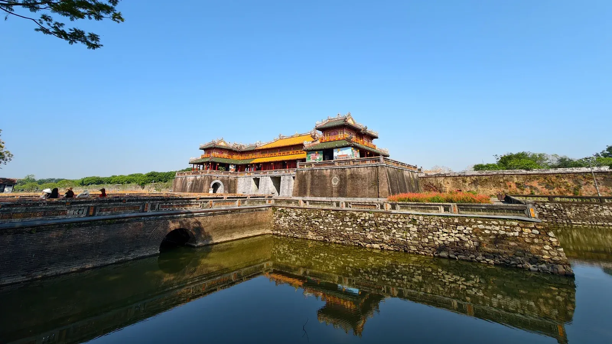
Arrivez à la gare de Hué le matin, où notre guide et chauffeur vous accueilleront chaleureusement. Partez ensuite à la découverte de la ville mystique de Hué.
Ensuite, transfert à la rivière des Parfums pour embarquer sur un bateau royal et départ vers des villages de l'est de la ville. L'occasion de découvrir la vie locale dans les rives de cette rivière poétique.
A l’arrivée au village de Tien Non, débarquez pour la balade à vélo dans la campagne à travers trois villages Tien Non, Thanh Tien et Sinh. La balade vous plongera vraiment dans le rythme de vie quotidienne des villageois.
Au village de Tien Non, rencontrez des paysans travaillant dans des champs et des jardins potagers. Puis visitez une maison de culte familial dans le village. Rendez-vous ensuite au village de Thanh Tien connu pour la fabrication artisanale de fleurs en papier âgée de 400 ans. En dehors du travail champêtre, les villageois confectionnent des fleurs en papier à l’approche de la fête du Têt afin de présenter de meilleurs vœux aux ancêtres.
Visitez la famille de M. Hieu artisan connu de Thanh Tien pour apprendre à fabriquer ces fleurs avec l’accompagnement de l’hôte.
Poursuivez votre visite en partant pour le village de Sinh, berceau des estampes folkloriques vieux de quatre siècles de Hue. Rencontrez M. Phuoc qui vous donne une petite explication sur les techniques de confection d’estampes traditionnelles. L’occasion de procurer de jolis souvenirs en cours de visite.
Déjeunez dans un restaurant local.
Continuer avec la pagode de Thien Mu - une des plus anciennes pagodes de Hue datant de 1601. Haut lieu spirituel de la ville, elle est connue pour son tour octogonal majestueux et sa belle vue sur la douce rivière des Parfums.
Pour terminer la journée, nous visiterons la citadelle de Hue, le seul vestige emblématique de ce qui fut jadis la cité impériale du Vietnam. Inspirée des fortifications de Vauban, elle est composée de trois parties: Kinh Thanh (cité capitale), Hoang Thanh (cité impériale) et Cam Thanh (cité interdite). S’y concentrent les bâtiments les plus beaux de Hue: la tour du drapeau, la porte du Midi, le palais de l’Harmonie suprême, les secteurs de Temples royaux et de résidence.
Le dîner est à votre charge (non inclus). Nuit à Hue.
Hébergement Emm Hotel Hue — chambre supérieure · ou similaire
-
Jour15 Huế → Hội An Visitez le tombeau de Khai Dinh, traversez le col pittoresque de Hai Van jusqu’à Hoi An, faites une halte au musée de la sculpture cham à Da Nang et explorez la charmante vieille ville de Hoi An.
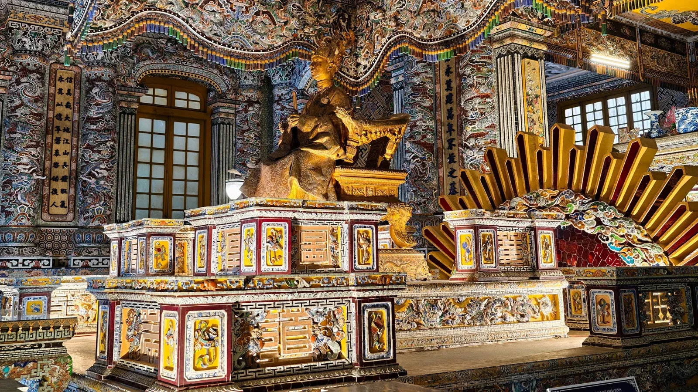
8:30 Commencez votre matinée par un court transfert vers tombeau de Khai Dinh, qui a été construit pendant 11 ans (1920 – 1931) sur la colline de Chau Tru. Il se distingue d’autres par un mélange de style oriental et occidental. Un effort de monter une centaine de marches vous fera accéder au palais de culte en haut. Vous serez récompensé par une découverte fascinante pour de superbes motifs de porcelaine, une géante peinture sur le plafond et puis un petit musée d’objets royaux à côté. Enfin, offrez-vous en descendant une vue panoramique sur le tombeau et les environs.
Ensuite, transfert vers transfert en voiture en direction de Hoi An en passant par la Route Mandarine et le col des Nuages (Hai Van). Arrêtez-vous au sommet du col pour profiter de la vue imprenable sur l'océan et la ville de Da Nang. Une fois arrivé à Da Nang, faites une halte pour visiter le musée Cham, qui conserve les plus importantes collections de culture cham du monde. Ensuite, promenez-vous sur la plage de My Khe où vous pourrez admirer des statues géantes de la Bonté de la Miséricorde dans la pagode Linh Ung. Prenez des photos de pêcheurs près de la plage, puis continuez le long de la côte en direction de la vieille ville de Hoi An.
Autrefois un des ports marchants les plus typiques d'Asie du Sud-Est pendant le 15ème et le 19ème siècle, la vieille ville de Hoi An préserve bien son charme d’antan. L'échange culturel affiché sur de nombreux bâtiments historiques, religieux et commerçant quotidiens est enrichi aussi par le style de vie authentique des habitants.
À l'arrivée, nous explorerons Hoi An. Notre premier arrêt est le Cam Pho, une des plus anciennes maisons communales de Hoi An. Sa construction inspirée des caractères chinois témoigne qu’elle n’est pas non seulement un lieu de culte mais aussi de commerce et d'échange culturel entre la localité et des marchands chinois et japonais.
Ensuite, nous visitons symbole de la ville de Hoi An, Chua Cau ou le pont couvert japonais fut érigé au XVIIe siècle afin de relier les quartiers avoisinants japonais et chinois. Son caractère d’origine reste soigneusement conservé au cours de 400 dernières années.
Nous continuons vers L'ancienne maison de Quan Thang, l'une des plus authentiques demeures de Hoi An qui est connue pour son architecture remarquable et ses vives sculptures. Sa construction dans un style oriental doit aux artisans du fameux village de menuiserie de Kim Bong. La maison offre un bon aperçu de la vie quotidienne des familles de Hoi An.
Nous concluons la journée par une visite du Salle de l’Assemblée de Phuc Kien (ou Fujian). Construite au XVIIe siècle, elle est lieu de rassemblement des résidents, des commerçants et des visiteurs issus d'une communauté chinoise, le Fujian. C'est également un lieu de culte à la déesse Thien Hau. La visite vous emmènera admirer ses fontaines colorées dans la cour, ses portes ornées entourantet les dragons magnifiquement sculptés de la salle principale.
Le dîner est à votre charge (non inclus). Nuit à Hoi An.
Hébergement Delicacy Hotel & Spa — chambre deluxe, vue sur la ville · ou similaire
-
Jour16 Hội An Balade à vélo à la découverte des villages ruraux autour de Hoi An, dont Kim Bong, Tra Nhieu et Cam Thanh.
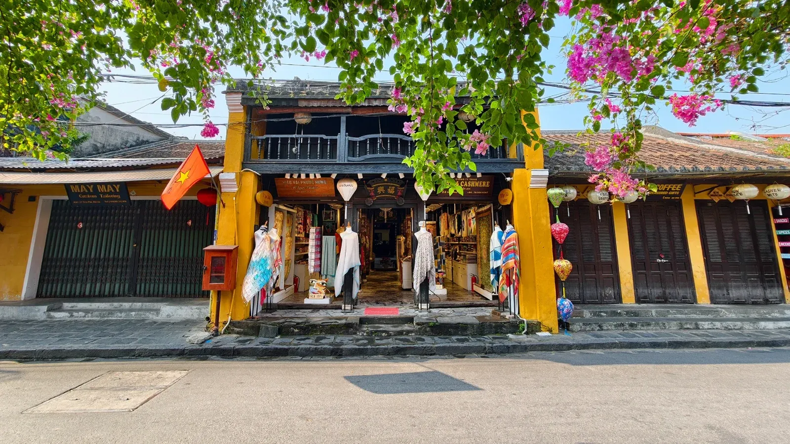
8:30 Aujourd’hui, vous partez pour une agréable balade à vélo à la découverte des villages ruraux autour de Hoi An. Depuis votre hôtel, vous pédalez en direction du village de Kim Bong, réputé depuis longtemps pour sa sculpture sur bois. Les artisans ont d’abord hérité des techniques du Nord du Vietnam, puis, grâce aux échanges commerciaux, ont intégré le savoir-faire chinois et japonais pour créer leur propre style.
Vous continuez sur de petits chemins bordés de rizières, de ponts en bambou et de paysages fluviaux jusqu’au village de Tra Nhieu. Ici, vous plongez au cœur de la campagne du Centre Vietnam. Vous rencontrez des habitants tels que Mme Duoc, spécialiste du tissage de nattes ; M. Kha, fabricant de paniers-bateaux en bambou ; ou encore M. Huynh Ri, qui entretient un petit chantier naval traditionnel. Le long du chemin, palmiers d’eau, rizières, buffles et paysans accompagnent votre parcours.
Depuis Tra Nhieu, vous embarquez pour une balade en bateau sur la rivière Thu Bon en direction de Cam Thanh. Le paysage de fermes de pêche et de palmiers d’eau vous guide jusqu’au village. À l’arrivée, vous prenez place dans un petit bateau-panier rond en bambou pour tenter de pêcher des crabes dans les canaux bordés de palmiers.
Vous profitez ensuite d’un moment de détente chez un pêcheur local, M. Phong, avec du thé vert et un massage des pieds aux herbes médicinales cultivées dans son jardin. Puis, avec des légumes frais, vous participez à un atelier culinaire pour préparer des spécialités de Hoi An : crêpe croustillante (viande, crevettes, germes de soja…) et rouleaux de printemps. Vous dégustez ensuite vos propres créations.
Le dîner est à votre charge (non inclus). Nuit à Hoi An.
Note : Si vous préférez ne pas faire de vélo, vous pouvez prendre une moto-taxi avec chauffeur à la place. Veuillez en informer votre guide à l’avance. Un supplément par personne et par moto s’applique.
Hébergement Delicacy Hotel & Spa — chambre deluxe, vue sur la ville · ou similaire
- Le SudSaigon · delta du Mékong
-
Jour17 Hội An → Saigon Prenez un vol de Da Nang à Ho Chi Minh-Ville et découvrez ses sites incontournables, notamment le Palais de l’Indépendance, le Musée des vestiges de la guerre et le marché Binh Tay.
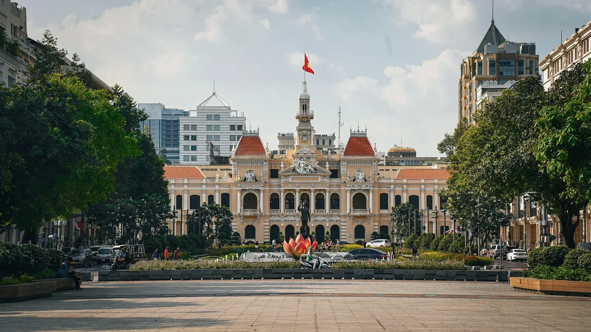
Notre chauffeur viendra vous chercher à votre hôtel dans la ville de Hoi An et vous conduira à l'aéroport de Da Nang.
Prenez un vol pour Ho Chi Minh-Ville.
À votre arrivée, le chauffeur vous accueillera dans le hall d'accueil de l'aéroport de Tan Son Nhat. Il faut une demi-heure de transfert de l'aéroport à votre hôtel (dans le centre-ville de Ho Chi Minh ville). La route vous donne une vue d’ensemble de la ville. Arrivée à votre hôtel, installation à votre chambre et repos.
Dans l'après-midi, nous commençons à explorer la ville par le Palais de l’Indépendance qui était autrefois le siège de l’Etat sud du Vietnam. Vous pourrez voir le tank historique de la force du Vietnam du nord qui attaquait le palais en 1975 pour mettre fin définitivement à la guerre du Vietnam. Explorez ses salles sur cinq étages qui préservent leur style de la fin des années 60 et 70 du siècle passé, sans oublier un bunker au sous-sol.
ar la suite, nous découvrirons le musée des Vestiges de la Guerre, une des attractions la plus visitée de la ville. Étonnant et plein d’émotions, les expositions offrent une vue d'ensemble de la guerre du Vietnam que vous n’avez jamais probablement vue et entendue.
Nous terminons la journée par une promenade au marché Binh Tay qui se situe dans le quartier chinois de Saigon. Chargé des centaines de stands, le plus grand marché de la ville répond à un gros besoin de Saigon, notamment des vêtements, des souvenirs et des produits alimentaires. Il existe également une aire de restauration où les visiteurs peuvent goûter des spécialités locales et de la cuisine de rue.
Dîner libre (non inclus). Nuit à Ho Chi Minh-Ville.
Hébergement Sanouva Hotel — chambre double deluxe premium · ou similaire
-
Jour18 Saigon → Bến Tre → Saigon Transfert à Ben Tre, promenade en bateau pour visiter une fabrique de briques ainsi que des ateliers de noix de coco et de nattes, puis exploration des villages en charrette motorisée ou à vélo.
8h30 Notre chauffeur et guide local viendront vous chercher à votre hôtel dans le centre de Hô Chi Minh-Ville. De là, vous partirez en direction de Bên Tre, au cœur du delta du Mékong.
À l’arrivée, embarquez sur un bateau au quai de Phong Nam (près du pont Phong Nam) pour une croisière sur la rivière Chet Say, un bras paisible du Mékong. En chemin, admirez la vie quotidienne sur l’eau : pêche, transport local, scènes authentiques. Arrêtez-vous dans une briqueterie traditionnelle où les briques sont encore fabriquées à la main. Rafraîchissez-vous avec un jus de coco frais.
Poursuite de la balade en bateau vers un atelier de transformation de noix de coco, où vous découvrirez la fabrication artisanale des bonbons à la noix de coco. Dégustez des bonbons, des fruits tropicaux et du thé au miel.
Petite marche pour visiter une famille locale spécialisée dans le tissage de nattes. Ensuite, choisissez entre une balade en charrette motorisée ou à vélo à travers les chemins paisibles du village, pour un aperçu authentique de la vie agricole.
Déjeuner dans un restaurant local.
Après le déjeuner, retour au quai en charrette motorisée. Puis embarquez sur une barque traditionnelle pour rejoindre le pont de Nha Viec.
Votre chauffeur vous attendra pour vous ramener à Hô Chi Minh-Ville.
Dîner libre (non inclus). Nuit à Ho Chi Minh-Ville.
Hébergement Sanouva Hotel — chambre double deluxe premium · ou similaire
-
Jour19 Saigon, départ Transfert à l’aéroport de Tan Son Nhat pour votre vol de retour.
Notre chauffeur viendra vous chercher dans le hall de votre hôtel à Ho Chi Minh Ville et vous conduira à l’aéroport de Tan Son Nhat.
Hébergements
Où vous dormez
Hôtels, maisons chez l’habitant, une nuit en croisière et une nuit en train. Ou hébergement similaire.
- Nuits 1, 8, 9 Hanoï Conifer Boutique HotelChambre ROH
- Nuit 2 Hà Giang Nghiem’s Homestay, Thôn ThaChez l’habitant · bungalow double
- Nuit 3 Đồng Văn Hoa Cuong HotelChambre double
- Nuit 4 Bảo Lạc PaoLo HotelChambre double
- Nuit 5 Bản Giốc Saigon – Ban Gioc ResortChambre deluxe
- Nuit 6 Cao Bằng Max Boutique HotelChambre deluxe
- Nuit 7 Ba Bể Duy Tho HomestayChez l’habitant · chambre double
- Nuits 10, 11 Ninh Bình Nep HouseChambre double
- Nuit 12 Baie de Lan Hạ Cycad Grand CruiseCroisière · cabine Junior Balcony
- Nuit 13 Hanoï → Huế Train de nuit SE3, Hanoï → HuếTrain de nuit · cabine de 4 couchettes
- Nuit 14 Huế Emm Hotel HueChambre supérieure
- Nuits 15, 16 Hội An Delicacy Hotel & SpaChambre deluxe, vue sur la ville
- Nuits 17, 18 Saigon Sanouva HotelChambre double deluxe premium
Inclus
Ce qui est compris
Inclus
- Guide local francophone, selon le programme
- 18 nuits avec petit-déjeuner
- Repas : 18 petits-déjeuners, 17 déjeuners, 9 dîners
- Transports et transferts du programme
- Croisière d’une nuit (Cycad Grand Cruise)
- Train de nuit Hanoï → Huế (SE3)
- Vol Da Nang → Saigon (Vietnam Airlines, économique)
- Bateaux : Ba Bể, Tam Cốc, Vân Long, Huế, Cẩm Thanh, Bến Tre
- Vélo : Ba Bể, Ninh Bình, Huế, Hội An, Bến Tre · kayak dans la baie
- Marionnettes sur l’eau, musique traditionnelle, cours de cuisine
- Entrées et billets du programme
- Eau minérale chaque jour
- Frais de service et taxes
Non inclus
- Vols internationaux
- Assurance voyage (obligatoire)
- Boissons et dépenses personnelles
- Pourboires
- Chambre individuelle (supplément)
- Tout ce qui n’est pas mentionné dans le programme
Départs 2027
Choisir une date
11 départs garantis, 7 voyageurs maximum. Une autre date ? Écrivez-nous.
Passeport et visa
Votre passeport doit être valide pendant au moins six mois après votre date d’arrivée au Vietnam et contenir au minimum deux pages vierges.
Les citoyens français, ainsi que ceux de 12 autres pays (notamment le Japon, la Corée du Sud, le Royaume-Uni, l’Allemagne, l’Italie et l’Espagne), peuvent entrer au Vietnam sans visa pour un séjour allant jusqu’à 45 jours. Si vous envisagez de rester plus longtemps, ou si votre nationalité ne bénéficie pas de cette exemption, renseignez-vous auprès de l’ambassade ou du consulat du Vietnam le plus proche, ou n’hésitez pas à nous contacter pour plus d’informations.
Vols internationaux
Les vols internationaux ne sont pas compris dans le prix de nos circuits. Vous avez toute liberté pour choisir et réserver les vols qui correspondent le mieux à vos besoins et à vos horaires. Si vous le souhaitez, nos conseillers de voyage peuvent vous aider à trouver les meilleures options disponibles.
Assurance voyage
Une assurance voyage valide est obligatoire pour participer au circuit. Elle doit impérativement couvrir :
- Les frais médicaux d’urgence (y compris hospitalisation et rapatriement)
- Les annulations ou interruptions de voyage
- Les activités prévues dans votre itinéraire, y compris les excursions en plein air
Avant le départ, merci de nous transmettre les informations suivantes :
- Le nom de votre compagnie d’assurance
- Votre numéro de police
- Le numéro d’assistance d’urgence disponible 24h/24
Pensez à vérifier si votre carte bancaire offre déjà une couverture, et à souscrire une assurance complémentaire si nécessaire.
Climat et meilleure période
Le printemps (février à avril) et l’automne (septembre à décembre) sont les saisons les plus agréables pour découvrir le Vietnam. Le climat y est doux, avec peu de pluie. Cependant, le pays s’étend sur plus de 1 600 km, et les conditions climatiques varient beaucoup. Vous pouvez découvrir le pays toute l'année:
- Nord : hivers frais (décembre à février), été chaud et humide.
- Centre : saison des pluies entre septembre et novembre.
- Sud : climat tropical, chaud toute l’année, avec des averses fréquentes de mai à octobre.
Prévoyez des vêtements adaptés à chaque région selon votre itinéraire.
Fuseau horaire
Le Vietnam est à GMT+7 toute l’année. Il n’y a pas de changement d’heure saisonnier.
Monnaie et paiements
La monnaie locale est le Dong vietnamien (VND). Le dollar américain et l’euro sont parfois acceptés dans les hôtels, mais ce n’est pas systématique.
- Les cartes bancaires (Visa, MasterCard) sont acceptées dans la plupart des hôtels, restaurants et boutiques de moyenne à grande taille.
- Les distributeurs automatiques sont nombreux dans les grandes villes.
- Le change peut se faire à l’aéroport, dans les banques ou bureaux de change agréés.
Astuce : évitez les billets trop abîmés ou déchirés, souvent refusés lors des paiements.
Vols domestiques
Si votre circuit comprend des vols intérieurs, les horaires précis, numéros de vol et informations nécessaires vous seront fournis dans vos documents de voyage.
Présentez-vous à l’aéroport au moins 2 heures avant le départ, munis de votre passeport et de votre billet électronique (ou code de réservation).
Bagages : La franchise bagages en soute varie généralement entre 20 kg et 23 kg, selon la compagnie aérienne. Pour les bagages cabine, la limite est souvent de 7 kg.
Attention : Des frais supplémentaires peuvent s’appliquer si vous dépassez les limites autorisées. Nous vous recommandons de vérifier les conditions spécifiques de chaque compagnie (Vietnam Airlines, VietJet Air, Bamboo Airways...) avant votre vol.
Les horaires de vol sont susceptibles d’être modifiés par la compagnie aérienne. Nous vous tiendrons informés en cas de changement.
Correspondances aériennes
Si vous avez une correspondance vers un vol domestique au Vietnam, voici les étapes à suivre à votre arrivée :
- Récupérez vos bagages enregistrés.
- Passez les contrôles d'immigration et de douane.
- Rejoignez le terminal des vols intérieurs (dans certains aéroports, cela nécessite un transfert à pied ou en navette).
Du personnel de l’aéroport est généralement disponible pour vous orienter si nécessaire. N’hésitez pas à leur demander de l’aide.
- Temps de correspondance recommandé : minimum 2h30
- Ce délai est conseillé afin de tenir compte des éventuels retards de vol, des files d’attente aux contrôles et du transfert entre terminaux.
Conseil pratique : dans les grands aéroports comme Hanoï (Noi Bai) ou Hô Chi Minh-Ville (Tan Son Nhat), les terminaux domestique et international ne sont pas toujours dans le même bâtiment. Prévoyez suffisamment de temps et suivez les indications dès votre arrivée.
Vaccins et médicaments
Aucun vaccin obligatoire n’est requis pour entrer au Vietnam.
Cependant, les autorités sanitaires recommandent les vaccinations suivantes, surtout pour les séjours de longue durée ou en milieu rural :
- Hépatite A et B
- Fièvre typhoïde
- Tétanos, diphtérie, coqueluche (rappels recommandés)
- Rage (en cas de séjour prolongé en zone rurale ou en contact possible avec des animaux)
- Si vous suivez un traitement médical régulier, veillez à emporter une quantité suffisante de médicaments pour toute la durée du séjour.
- N’oubliez pas votre ordonnance, de préférence en anglais, afin de faciliter d’éventuels contrôles ou consultations sur place.
Paludisme et moustiques
Le risque de paludisme est très faible dans les principales zones touristiques du Vietnam : Hanoï, baie d’Halong, Ninh Binh, Mai Chau, Pu Luong, Hue, Hoi An, Da Nang, Hô Chi Minh-Ville, et le delta du Mékong (région touristique). Aucune prophylaxie antipaludique n’est généralement recommandée pour ces régions.
En revanche, si vous envisagez de voyager dans des zones rurales, forestières ou montagneuses isolées (par exemple: Muong Te à Lai Chau, certaines zones frontalières ou reculées du Haut Tonkin, ou dans le Mékong profond), consultez un médecin ou un centre de médecine des voyages pour évaluer la nécessité d’un traitement préventif.
Conseils pour se protéger des piqûres de moustiques
- Appliquez un répulsif sur la peau exposée, contenant du DEET (30-50%), de l’icaridine ou du PMD (citriodiol).
- Portez des vêtements longs et couvrants, surtout en début de soirée et pendant la nuit.
- Dormez sous moustiquaire, surtout dans les hébergements rustiques, en pleine nature ou sans climatisation.
- Utilisez un diffuseur électrique ou des spirales anti-moustiques en soirée dans les zones non climatisées.
- Évitez les eaux stagnantes à proximité de votre logement (lieux de ponte des moustiques).
Accueil à l’aéroport
Dès votre arrivée au Vietnam, notre chauffeur vous attendra à la sortie de l’aéroport, tenant une pancarte portant l’inscription : « IZITOUR – [Votre nom] ».
- Veuillez prendre le temps de vérifier attentivement les pancartes à la sortie de la zone d’arrivée. En cas de difficulté pour localiser notre chauffeur, n’hésitez pas à contacter notre assistance, disponible 24h/24 et 7j/7, au numéro suivant :
- +84 382 536 266 (appel direct ou WhatsApp disponible).
Conseil pratique : Assurez-vous que votre téléphone est bien activé pour les appels internationaux ou la connexion internet à votre arrivée, afin de faciliter la communication si nécessaire.
Remarque : Dans certains aéroports, plusieurs chauffeurs attendent à la sortie. Si vous ne trouvez pas immédiatement notre représentant, restez dans la zone de rencontre et contactez-nous — nous vous guiderons rapidement.
Circuit en petit groupe
Nos circuits en petit groupe rassemblent généralement entre 4 et 7 participants. Vous voyagerez en compagnie de personnes venant d’horizons variés, avec des nationalités, cultures et âges différents. C’est une excellente opportunité de partager des expériences, d’échanger des points de vue et de créer des liens enrichissants tout au long du voyage.
Pour assurer le bon déroulement des activités prévues, la ponctualité de chacun est primordiale. Merci de respecter les horaires communiqués par votre guide local, afin de garantir une expérience agréable et fluide pour l’ensemble du groupe.
Chambre partagée et individuelle
- Dans le cadre d’un voyage en groupe, l’attribution des chambres se fait en fonction du genre mentionné sur le passeport. Par défaut, vous partagerez une chambre à deux lits avec une personne du même sexe.
- Vous serez logé(e) en chambre individuelle dans l’un des cas suivants :
- Vous préférez disposer d'une chambre individuelle.
- Aucun autre voyageur ne souhaite partager une chambre.
- Dans ces deux cas, un supplément sera appliqué. Nous vous invitons à contacter votre conseiller de voyage pour vérifier la disponibilité et connaître le montant exact.
- À noter : ce supplément ne s’applique pas aux cabines dans le train, qui comprennent 4 couchettes par compartiment.
Avis voyageurs
Ils sont partis en petit groupe
« Les marchés ethniques sont vraiment impressionnants. Le petit groupe rend l’ambiance conviviale. »
« … les rencontres dans les villages ethniques étaient sincères. Le guide francophone expliquait bien et l’ambiance du petit groupe était agréable. »
« Comme c’est un voyage en groupe, il faut parfois s’adapter au rythme de chacun, et les trajets peuvent être un peu longs. Mais l’expérience humaine et l’authenticité compensent largement. »
Petits groupes
Vous aimerez aussi


Votre voyage
Ce voyage vous parle ?
Posez vos questions à un conseiller francophone. Réponse sous 24 h.